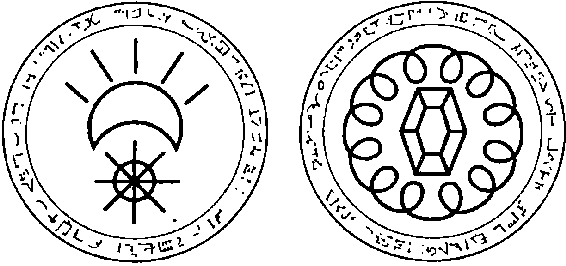

c
D
Bu desenler ölçekli olarak çizilmemiştir. Ruhlar bunları farklı büyüklük ve renklerde görür, ama hemen hemen her zaman yuvarlaktır ve Yaşlı'nın boynunda asılıdır. Bütün amblemler okunmayan dilbilimsel işaretlerin oyulmuş olduğu mutat bir çift daireli kenarla gösterilmiştir.
290

İHTI Yl\ U l .l\ U MI ı ·ı / o, /
Şekil 9 (E-H) devamı